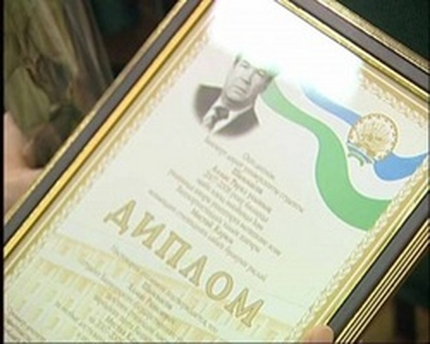

---
{
  "title": "Стипендия имени Мустая Карима — Уфа литературная",
  "styles": [
    "page-layouts.css"
  ],
  "breadcrumbs": [
    {
      "label": "О проекте",
      "href": "../../index.html"
    },
    {
      "label": "Конкурсы, награды, фонды, праздники",
      "href": "../awards/"
    },
    "Стипендия имени Мустая Карима"
  ]
}
---
<article class="reading stipend">
			<h1 class="page-title">Стипендия имени Мустая Карима</h1>
			<figure class="stipend-illustration">
				
			</figure>
			<div class="stipend-copy">
				<p>В рамках мероприятий по увековечению памяти народного поэта Башкортостана Мустая Карима в 2006 году принято решение об учреждении стипендии его имени. Ежемесячная стипендия им. М. Карима будет вручаться двум лучшим студентам филологического факультета Башкирского государственного университета. Стипендиаты определяются путем открытого конкурсного отбора. А претендовать на нее смогут студенты 3-5 курсов, которые добились заметных успехов в учебе, проявили способности на литературном поприще, активно занимаются научно-исследовательской и общественной работой.</p>
			</div>
		</article>
